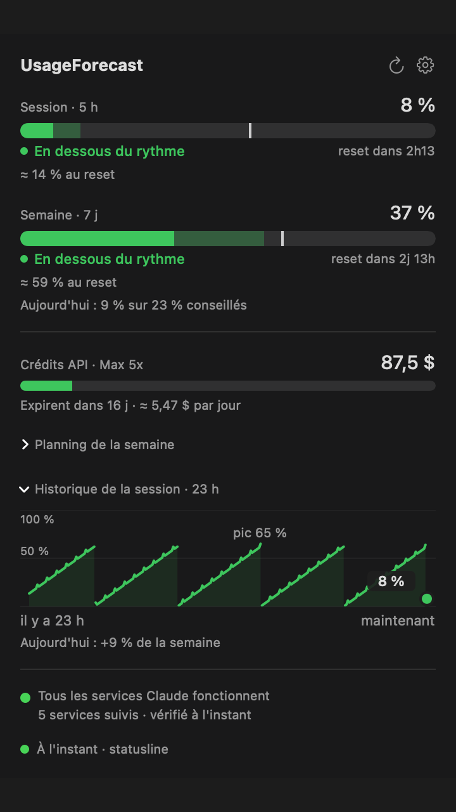
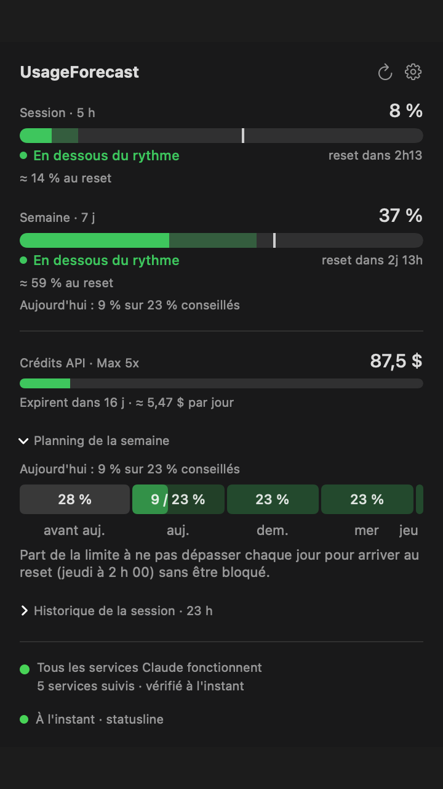

Où tu en es avec Claude, et où tu vas.
Tes limites de session et de semaine dans la barre de menu, avec la prévision de fin de semaine, le budget du jour et des alertes claires. Sur ton Mac et sur ton téléphone.
curl -fsSL https://raw.githubusercontent.com/Alane38/claude-usage-bar/main/scripts/install.sh | sh
Mac Apple Silicon, macOS 12 ou plus récent. L'empreinte SHA-256 de l'archive est vérifiée avant l'installation. Télécharger à la main.


Ce que tu obtiens
Un compteur, mais qui regarde devant.
Prévisions
Estimation à la fin de la session et de la semaine, avec l'heure à laquelle tu atteindrais 100 % au rythme actuel.
Budget du jour
« 9 % utilisés sur 23 % conseillés », et un planning de la semaine pour répartir ton effort.
Alertes claires
Seuils, rythme trop rapide, limite atteinte : chaque message dit quoi faire et quand le reset arrive.
Historique
Courbe minute par minute sur 24 h, journal quotidien gardé 400 jours et statistiques par jour de la semaine.
Crédits API
Solde et dépense du mois pour les comptes Max et Team, avec la date d'expiration.
Mises à jour en un clic
L'app vérifie l'empreinte de la nouvelle version, l'installe et garde l'ancienne dans la Corbeille.
Prévisions et statistiques
Le planning de la semaine et ce que ton historique dit de ton rythme.


Tes données restent chez toi
Aucun compte, aucun serveur à nous, aucune télémétrie.
Source officielle d'abord
Avec Claude Code, l'app lit les limites que Claude Code transmet à son statusline : ni cookie, ni réseau.
Cookies dans le trousseau
Si tu utilises claude.ai ou la Console, les cookies sont gardés dans le trousseau macOS, jamais dans un fichier ni dans un journal.
Mobile chiffré
La synchro est désactivée par défaut. Activée, tout est chiffré (AES-256-GCM) sur ton Mac : le relais, que tu héberges toi-même, ne voit que du texte chiffré.
Démarrer en trois minutes
- Installe l'app avec la commande ci-dessus. Elle apparaît dans la barre de menu.
- Choisis une source dans l'assistant de démarrage : le réglage Claude Code à copier, ou ton compte claude.ai.
- Active les alertes et, si tu veux, la synchro mobile dans les Réglages.
Questions
C'est gratuit ?
Oui. Le code est ouvert, sous licence MIT. Le relais mobile tient dans l'offre gratuite de Cloudflare.
Ça marche sans Claude Code ?
Oui, avec le cookie de ta session claude.ai, collé dans les Réglages. L'assistant de démarrage t'explique les deux voies.
Et sur Windows ou Linux ?
Pas pour l'instant : l'app est faite pour la barre de menu de macOS. L'application mobile, elle, s'installe depuis le navigateur d'un téléphone Android.
Quel rapport avec ClaudeUsageBar ?
UsageForecast est un fork de ClaudeUsageBar d'Artzainnn (licence MIT). Le code a été largement réécrit : sources de données, stockage des secrets, prévisions, alertes, historique, mobile.
Est-ce un produit d'Anthropic ?
Non. Ce projet n'est ni affilié à Anthropic ni approuvé par Anthropic. L'app s'appuie sur des points d'accès internes qui peuvent changer sans préavis.